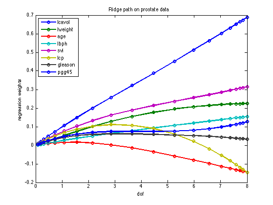

Plot the full L2 regularization path for the prostate data set
Contents
loadData('prostateStnd');
setSeed(0);
NL = 20;
lambdas = [logspace(4, 0, NL) 0];
[n, d] = size(X);
nlambdas = numel(lambdas);
w = zeros(nlambdas, d);
for i=1:nlambdas
model = linregFit(X, y, 'lambda', lambdas(i), 'preproc', struct('addOnes', false));
w(i, :) = rowvec(model.w);
end
dof = linregDofL2(X, lambdas);
figure
plot(dof, w, '-o', 'LineWidth', 2);
legend(names{1:size(X, 2)}, 'Location', 'NorthWest');
xlabel('dof');
ylabel('regression weights');
title('Ridge path on prostate data');
printPmtkFigure ridgePathDemo
if 0
figure
plot(log(lambdas), w, '-o', 'LineWidth', 2);
legend(names{1:size(X, 2)}, 'Location', 'NorthEast');
xlabel('log(lambda)');
ylabel('regression weights');
title('Ridge path on prostate data');
printPmtkFigure ridgePathDemoLambda
end

now use path algorithm
if ~glmnetInstalled, return; end
pp = preprocessorCreate();
options = glmnetSet();
options.nlambda = 30;
[bestModel, path] = linregFitPathCv(X, y, 'regtype', 'l2', 'preproc', pp,...
'options', options, 'nfolds', 5);
figure;
lambdas2 = rowvec(path.lambdas);
dof2 = linregDofL2(X, lambdas2, false);
plot(path.w', '-o', 'LineWidth', 2);
legend(names{1:size(X, 2)}, 'Location', 'NorthWest');
hold on
bestNdx = find(bestModel.lambda==lambdas2);
verticalLine(bestNdx, 'linewidth', 2, 'color', 'r');
printPmtkFigure ridgePathDemoCv